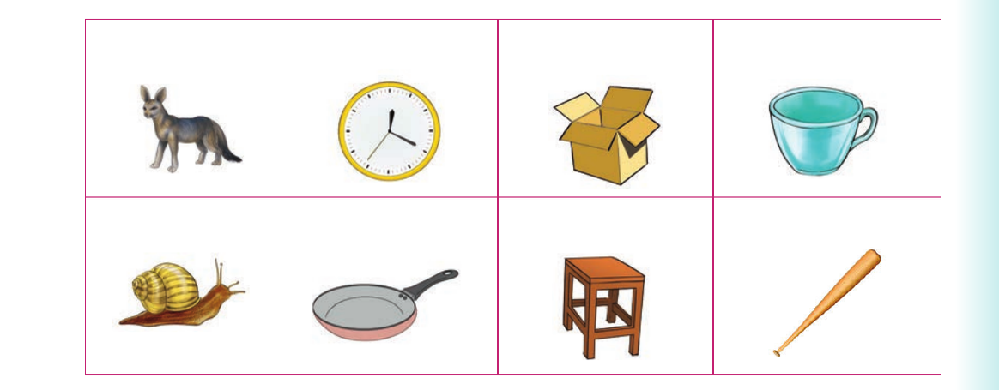

I add sounds at the beginning of words. Or I finger spell additional letters at the beginning of words

Numbers 8 to 10 show a star, a child eating and an ant.
I add sounds at the beginning of words. Or I finger spell additional letters at the beginning of words.
Activity 1
1. Pronounce or sign the following words:
| car | lock | ox | nail |
| tool | up | at | an |
2. Add a sound at the beginning of each word in (1). Or finger spell additional letters at the beginning of the words in (1). 3. Name the following pictures orally or using sign language:

(a) (b) (c) (d) (e) (f) (g) (h)
Adding beginning sounds - Activities 2 and 3
Activity 2
1. Pronounce or sign the words and, and end.
2. Add a sound at the beginning of the following words: and, end. Or finger spell additional letters at the beginning of the following words: and, end. Make as many correct words as possible.
Examples:
and- hand end- send 3. Pronounce or sign the words you have formed in (2). 4. Read aloud or sign the following sentences: (a) A man in the car has a scar. (b) The ox fights with a fox. (c) They went up the Mountain with a cup. (d) The lock is near the clock.
Activity 3
1. Pronounce or sign the following letter sounds:
| s | m | c | b | h | p |
| r | t | d | f | l | n |
2. Read aloud or sign the words in the table. Then, form correct words by adding the sound of the letters in (1) to the beginning of the words. Or finger spell the additional letters at the beginning of the words.
| top | nail | at | old | ear |
| and | rip | raw | air |